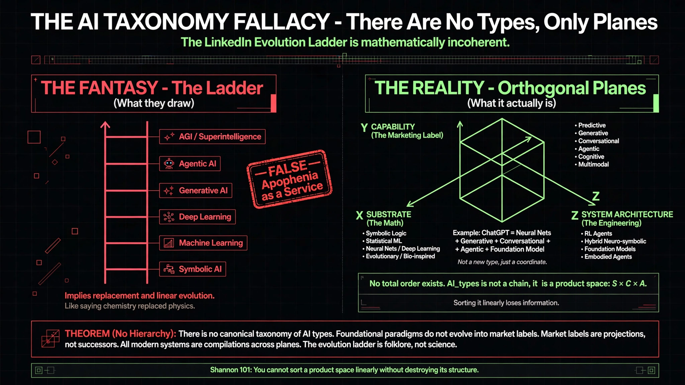

The AI Taxonomy Fallacy
To kill the whole “Types / Evolution / Landscape” bubble. The familiar ladder — Symbolic → ML → Deep Learning → GenAI → Agentic → AGI — confuses substrate, capability, and system architecture.
A real system is not a step on a ladder. It is a coordinate in S × C × A.
Read note ↗